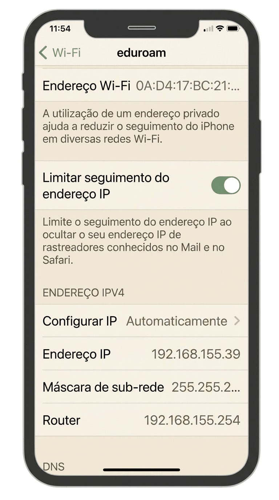
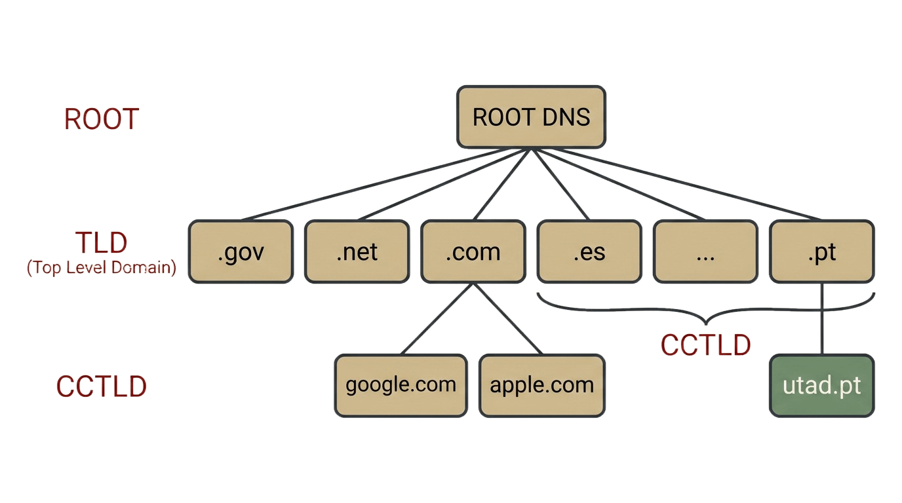
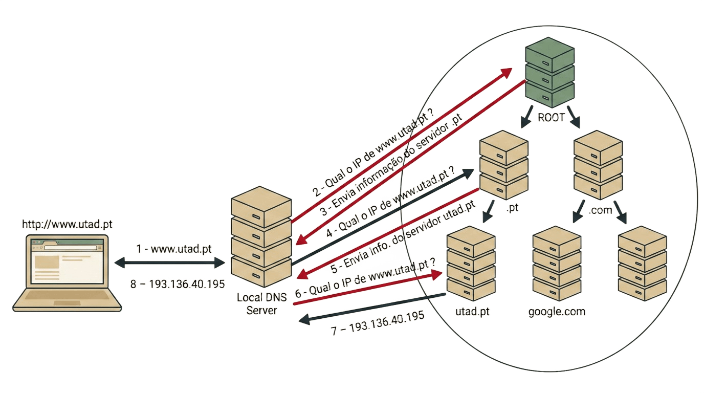

6 Modelos de Comunicação e Redes
Modelos de Comunicação e Redes
6.1 Porque Organizar a Comunicação em Camadas?
Antes de um leitor da Contraponto conseguir sequer ver a página inicial da revista, o pedido que o browser envia ao servidor só lá chega depois de uma série de operações:
- encontrar o endereço do servidor da revista;
- determinar o caminho que os dados têm de percorrer até lá;
- estabelecer uma ligação fiável;
- converter os dados em sinais elétricos ou impulsos de rádio.
Este conjunto de operações é regido por regras que governa cada uma destas operações — o formato das mensagens, a ordem das trocas, o tratamento de erros — é precisamente o que se chama um protocolo de comunicação. Sem ele, dois dispositivos não conseguem entender-se.
O browser faz tudo isto sem que o Tiago, do lado do servidor, precise de pensar em nenhum destes detalhes. Antes de um pedido poder sair do browser e chegar a um servidor, há uma pilha inteira de protocolos que tem de funcionar corretamente por baixo dessa comunicação.
O que é, exatamente, um protocolo? E o que é uma pilha protocolar? Um protocolo é um conjunto de regras acordadas entre duas partes (dois dispositivos) que querem comunicar: define o formato exato das mensagens trocadas e a ordem em que devem ser enviadas, para que ambas se entendam sem ambiguidade. Pode pensar-se num protocolo como um contrato entre dois dispositivos remotos numa rede, que define as regras de como eles vão comunicar à distância.
Nenhum protocolo, sozinho, resolve todos os problemas de fazer uma mensagem chegar de um computador a outro: são precisos vários, cada um a tratar de uma parte diferente do problema, as mesmas quatro operações já referidas acima.
Esse conjunto de protocolos está organizado de modo a que cada um, quando precisa de uma funcionalidade oferecida por outro, recorra a esse outro protocolo para a obter. Essa relação define uma hierarquia em que os protocolos que usam outros estão “em cima” e os que são usados estão “em baixo”. Chama-se a este arranjo uma pilha protocolar (protocol stack), ou arquitetura em camadas.
É esta pilha, e não um único protocolo isolado, que o pedido do leitor da Contraponto tem de atravessar, sem que o utilizador disso se aperceba, antes de sequer chegar ao servidor.
Numa arquitetura em camadas, cada camada é um módulo que depende das camadas abaixo de si, mas é completamente independente das camadas acima de si: só precisa de saber como usar a camada imediatamente abaixo dela, não como funcionam as camadas acima. Isto permite que cada uma seja desenvolvida, otimizada ou substituída de forma independente das restantes, desde que o serviço que presta às camadas acima de si se mantenha o mesmo. A esse serviço que uma camada presta à camada imediatamente superior, sem que esta precise de saber como é implementado por baixo, chama-se precisamente um serviço.
Um serviço, tal como um protocolo, também pode ser pensado como uma espécie de contrato, mas com uma diferença essencial: um protocolo é um contrato entre dois dispositivos remotos, que define como eles comunicam à distância; um serviço é um contrato entre camadas dentro de um mesmo dispositivo, que define como funcionam entre si, localmente. Ou seja, um serviço tem uma ação local, enquanto um protocolo tem uma ação remota.

6.2 Os Dois Modelos: OSI e TCP/IP
Historicamente, surgiram dois modelos de referência para organizar a comunicação em camadas, com origens diferentes:
- OSI (Open Systems Interconnection): desenvolvido pela ISO (International Organization for Standardization) como um modelo formal, com sete camadas: física, ligação de dados, rede, transporte, sessão, apresentação e aplicação. Por ter sido definido e aprovado formalmente por um organismo internacional de normalização antes de estar amplamente implementado, o OSI é conhecido como o padrão de jure (por lei, ou seja, formalmente instituído).
- TCP/IP (também chamado modelo DoD, por ter as suas origens no Departamento de Defesa dos EUA): um modelo mais simples, com apenas quatro camadas, aplicação, transporte, rede (ou internet) e acesso à rede, que nasceu diretamente da implementação prática da ARPANET, a precursora da Internet. Por se ter tornado o modelo efetivamente usado, através da sua adoção generalizada, antes de qualquer normalização formal internacional, o TCP/IP é conhecido como o padrão de facto (de facto, ou seja, imposto pela prática e pelo uso corrente).

Na prática, a Internet de hoje funciona sobre o modelo TCP/IP, não sobre o OSI: o OSI continua a ser usado, sobretudo, como ferramenta pedagógica, por dividir de forma mais fina responsabilidades que, no TCP/IP, aparecem concentradas numa única camada. Para os objetivos desta UC, interessam sobretudo três camadas do modelo TCP/IP:
- Aplicação: onde correm os protocolos que uma aplicação usa diretamente, como o HTTP, o correspondente aproximado às três camadas superiores do OSI (aplicação, apresentação e sessão);
- Transporte: responsável por entregar os dados de forma fiável entre dois programas, através do protocolo
TCP; - Rede: responsável por encaminhar os dados entre redes diferentes, até ao seu destino, através do protocolo
IP.
Cada uma destas camadas comunica com a sua camada par (no dispositivo remoto) através de um protocolo (como se viu na Figura 6.1): um conjunto de regras que define como os dados são trocados entre duas entidades da mesma camada, uma do lado do cliente e outra do lado do servidor. É o protocolo da camada de Aplicação do modelo TCP/IP, conhecido como HTTP, que define as regras de como um browser pede uma página a um servidor. O HTTPserá o tema a estudar no próximo capítulo.
Para ver que outros protocolos reais correm em cada camada, e o formalismo mais preciso por trás da distinção entre serviço e protocolo, ver a Secção D.2 e a Secção D.3.
6.3 O Percurso dos Dados: Encapsulamento
Quando uma aplicação envia dados, estes atravessam cada camada do modelo TCP/IP, e cada camada acrescenta a sua própria informação de controlo, num processo chamado encapsulamento. Vale a pena seguir este percurso passo a passo, das camadas superiores até ao meio físico.
A figura seguinte resume todo o percurso: os dados de uma mensagem HTTP saem da camada de aplicação, passam por um socket (o ponto de ligação entre a camada de aplicação e a pilha protocolar), e descem as camadas de transporte, rede e ligação, cada uma aplicando o seu protocolo e encapsulando os dados que recebe da camada superior, até chegarem à placa de rede (NIC, Network Interface Controller) que os converte, finalmente, num sinal elétrico ou de rádio:

Não confundir a camada de aplicação com a aplicação em si: a camada de aplicação é apenas uma das camadas do modelo TCP/IP, que define como os dados são trocados entre duas aplicações remotas; a aplicação é o programa que o utilizador usa diretamente, como um browser ou um email client, que usa a camada de aplicação para enviar e receber dados. Na Figura 6.3 o browser ou o email client estão representados pelo retângulo DADOS, que é a aplicação que envia os dados.
6.3.1 A Camada de Transporte: TCP
O payload (nome técnico dado aos dados, neste caso, por exemplo, uma mensagem HTTP) é passado à camada de transporte pela camada de aplicação, através de um socket, que lhe acrescenta um cabeçalho TCP com as portas de origem e de destino. São dois endereços que permitem identificar as aplicações que estão a enviar e receber os dados - um browser ou um email client.
As portas variam entre 0 e 65535, e as chamadas well-known ports, entre 0 e 1023, estão reservadas para serviços conhecidos, como a porta 80 para o HTTP ou a 443 para o HTTPS. A Tabela 6.1 mostra as portas mais comuns para alguns protocolos conhecidos.
| Porta | Protocolo | Serviço |
|---|---|---|
| 80 | HTTP | Páginas web (sem cifragem) |
| 443 | HTTPS | Páginas web (com cifragem TLS) |
| 21 | FTP | Transferência de ficheiros |
| 25 | SMTP | Envio de correio eletrónico |
| 53 | DNS | Resolução de nomes de domínio |
O TCP garante ainda que os dados chegam de forma fiável e pela ordem correta: divide-os em segmentos numerados, e reenvia qualquer segmento que não seja confirmado pelo recetor dentro de um espaço de tempo bem determinado.
A estrutura exata do cabeçalho TCP, e os mecanismos que garantem essa fiabilidade, são aprofundados na Secção D.4.1, para os alunos mais curiosos.
6.3.2 A Camada de Rede: IP
A seguir, os dados passam para a camada de rede, à qual é adicionado um cabeçalho IP com os endereços IP de origem e de destino. Um endereço IPv4 tem a forma (0-255).(0-255).(0-255).(0-255), como em 192.168.24.36; este endereço indentifica cada computador mesmo que estejam em redes diferentes.
Um mesmo computador pode ter vários endereços IP, um por cada interface de rede que possuir. É o exemplo da Figura 6.3 em que há dois dispositivos de rede: a placa de rede Wi-Fi e a placa de rede Ethernet, cada uma com o seu próprio endereço IP.
A estrutura completa do cabeçalho IP é aprofundada na Secção D.4.2.
6.3.3 A Camada de Ligação: Ethernet e Endereços MAC
Depois da camada de rede vem a camada de ligação de dados, cuja tarefa é entregar um pacote a uma máquina dentro da mesma rede local. Esta camada adiciona os endereços MAC (MAC significa Medium Access Control) de origem e de destino, formando uma trama (frame), tipicamente segundo a norma IEEE 802.3 (Ethernet) ou o equivalente para redes sem fios. Estes endereços apenas identificam dispositivos dentro da mesma rede local, e são atribuídos pelo fabricante da placa de rede, sendo únicos em todo o mundo. Um endereço MAC tem a forma XX:XX:XX:XX:XX:XX, como em 00:1A:2B:3C:4D:5E.
A estrutura completa de uma trama Ethernet é aprofundada na Secção D.4.3.
6.3.4 O Meio Físico
Por fim, na camada física, os bits são convertidos em sinais elétricos, impulsos de luz (fibra ótica) ou ondas de rádio (Wi-Fi), e transmitidos pelo canal físico correspondente. Do lado recetor, este processo acontece exatamente ao contrário, camada a camada, até restarem apenas os dados originais da aplicação; o percurso completo, em ambas as direções, é aprofundado na Secção D.5 e na Secção D.6.
Todos estes endereços não são abstrações teóricas: qualquer computador, telemóvel ou tablet ligado a uma rede tem, nesse preciso momento, um endereço MAC e um endereço IP atribuídos, visíveis nas suas próprias definições de rede. A captura de ecrã seguinte mostra as definições de Wi-Fi de um iPhone ligado à rede eduroam, com o seu endereço MAC (identificado como “Endereço Wi-Fi”), o seu endereço IP, a máscara de sub-rede e o endereço do router:

A Tabela 6.2 resume os diferentes tipos de endereço acrescentados ao longo do percurso dos dados, desde a aplicação até ao meio físico: cada camada do modelo TCP/IP junta o seu próprio endereço, e cada um identifica uma coisa diferente.
| Camada | Protocolo | Endereço de origem | Endereço de destino |
|---|---|---|---|
| Transporte | TCP | Porta da aplicação que envia | Porta da aplicação que recebe |
| Rede | IP | IP do computador que envia | IP do computador que recebe |
| Ligação | Ethernet | MAC da placa de rede que envia | MAC da placa de rede que recebe |
É precisamente por existirem estes três níveis que duas aplicações, em dois computadores diferentes, só conseguem comunicar entre si quando os três endereços estão identificados: a porta, que garante que os dados chegam à aplicação certa, dentro do computador certo; o endereço IP, que garante que chegam ao computador certo, dentro da rede certa; e o endereço MAC, que garante que chegam à placa de rede certa, dentro da rede local. Falta qualquer um destes três, e a comunicação não se completa.
6.4 Encaminhamento (Routing)
Até aqui, os dados moveram-se sempre dentro da mesma rede local, identificados pelo endereço MAC. Mas a Internet é, no fundo, uma enorme rede de redes: milhares de redes locais diferentes, ligadas entre si. É essa ligação entre redes que permite, por exemplo, que o leitor da Contraponto, a partir de sua casa, consiga chegar ao servidor da revista, que está numa rede completamente diferente. O equipamento responsável por essa ligação chama-se router: a sua função é receber pacotes vindos de uma rede e reencaminhá-los para a rede seguinte, no caminho certo até ao destino.
Um router reconhece, pelo endereço IP de destino de cada pacote, que este não se destina à sua própria rede local, e decide para que rede o deve reencaminhar a seguir. Um exemplo típico: alguém, em casa, escreve uma pesquisa no Google. O pacote formado tem como IP de destino o IP dos servidores do Google. O router de casa recebe esse pacote, reconhece que o IP de destino não pertence à sua rede, e reencaminha-o para a rede pública; de router em router, de salto em salto, o pacote acaba por chegar ao computador de destino, com o IP pretendido. Para decidir para onde reencaminhar cada pacote, cada router mantém uma tabela de encaminhamento (routing table), com regras que associam destinos possíveis à interface de rede por onde o pacote deve seguir.
Vale a pena notar a diferença entre um router e um switch: um switch interliga vários equipamentos dentro da mesma rede local, encaminhando tramas com base no endereço MAC; um router interliga redes diferentes entre si, encaminhando pacotes com base no endereço IP. É por isso que um pedido a um servidor fora da rede local, como o do Google no exemplo anterior, passa sempre por, pelo menos, um router.
6.5 Portas, Endereços e URLs
Um endereço como http://www.utad.pt esconde, na verdade, várias informações: o protocolo a usar (http), o nome do servidor (www.utad.pt), opcionalmente, a porta a usar e o recurso a que quer aceder (ou seja, o nome da página web). O browser precisa de todas estas informações distintas: o endereço do servidor e a porta a usar. Quando nenhuma porta é indicada explicitamente, assume-se a porta bem conhecida do protocolo em causa, a porta 80 no caso do HTTP, pelo que http://www.utad.pt e http://www.utad.pt:80 são, na prática, equivalentes.

Como os humanos memorizam mais facilmente texto do que números, o endereço escrito num URL tem sempre a forma de um nome de domínio, como www.utad.pt, nunca de um número IP diretamente. Mas a rede, ao nível da camada IP, só entende números. É o DNS que faz a ponte entre estas duas realidades.
6.6 O Sistema de Nomes de Domínio (DNS)
O DNS (Domain Name System) é o serviço responsável por traduzir nomes de domínio, como www.utad.pt, no endereço IP correspondente. O processo é simples do ponto de vista de quem o usa: o browser pergunta a um servidor de nomes qual é o IP correspondente a um dado domínio, e o sistema de nomes responde com o número IP, que o browser passa então a usar no cabeçalho IP de todos os pacotes seguintes para esse destino.

ROOT) até aos domínios de topo (TLD) e aos domínios de cada organização.
O DNS não é, contudo, um único servidor, mas um sistema hierárquico e distribuído de servidores, organizado por domínios e subdomínios: um servidor pode não saber diretamente o IP de www.utad.pt, mas sabe a que outro servidor perguntar, mais próximo desse domínio na hierarquia, até que a resposta final seja obtida. Só depois de resolvido o nome de domínio no seu endereço IP é que o pedido HTTP pode, de facto, ser enviado ao servidor de destino, o que faz da resolução DNS um passo obrigatório, e por vezes o mais lento, sempre que se acede pela primeira vez a um determinado sítio.

www.utad.pt: o browser pergunta ao servidor de DNS local, que vai perguntando, sucessivamente, ao servidor de raiz, ao servidor do domínio .pt e, por fim, ao servidor de utad.pt, até obter o endereço IP correspondente.